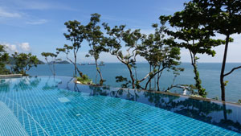

Swimming Pool repairs are an essential aspect of any swimming pool maintenance, we have the perfect range of swimming pool repair products which are made for direct underwater use with any sanitizing system.
Our products are far easier to use than any other underwater compound or two-part epoxy adhesives.
All our underwater adhesives are designed to do long-lasting underwater repairs in swimming pools, spas, fountains and water features for all climate zones around the world. Used in over 70 countries around the world from pool professionals, hotel maintenance staff, government agencies and private pool owners alike it has proven to work and last for many years.
The enormous strength gives you the possibility to do horizontal and vertical repairs without support equipment during curing, the high flexibility enables you to use it for expansion joints, tile-fiberglass, liner-, Pebble- or Gunite™ repairs in and around swimming pools.
Underwater Magic™ adhesive and sealant has been developed for all kinds of commercial- as well as residential pools and sanitizing systems and is also often used to rescue and repair above ground pools.
The 5 colors of Underwater Magic™ adhesive and sealant 290 ml are the only way to do all swimming pool repairs with a single product.
• re-glueing tiles and doing the grout lines at the same time in a matching color.
• the color white for re-attaching tiles and re-grouting.
• the color blue to repair leaks and cracks in fiberglass and above ground pools to give the best look and seal instantly.
• the color sand for grout lines which are years old when white would stick out too much.
• the color gray is mostly used for expansion joints and gray grouted pools.
• the color black for granite pools and fountains.
• patch a vinyl or liner pool horizontal and vertical underwater in a few minutes with the color which matches your liner best. Repair or patch a pool without draining the water or the need to use a vinyl pool repair kit.
• suitable for pools using a robotic pool cleaner as well.
Mosaic pools are having loose or broken tiles from time to time and big tubes of adhesives are a waste of money. We heard your call and developed Underwater Magic Mosaic™ 120 gr in the handy "no tool" squeezes tube, it is coming in the color white to replace your grout line in one go.
We also have our Underwater Magic Putty™ 56 g in white for small underwater repairs, we recommend it for temporary repairs. Our scientific and field test team statement: our epoxy based product will stay flexible under the influence of swimming pool water but like other flexible epoxy products it will get rock solid hard and then brittle away over al long period. That's why we recommend epoxy for temporary repairs only.
Our technical support team of pool pro's and scientists is 365 days a year here for you to make your pool repair easy.

You want to reattach broken or loose swimming pool tiles or you are looking for a swimming pool repair adhesive which is capable to seal leaks, reseal skimmer, replace grouting, seal the transition area, you need to seal a crack or a underwater pool liner glue: we have the answer and it works just like magic!
Underwater Magic™ adhesive & sealant and our Underwater Magic Mosaic™ are extremely strong single component adhesives and sealants ready to use (no mixing involved), specially developed for the entire pool and spa area, making them the perfect swimming pool glue which enables you to direct repair underwater, since it direct cures underwater and even stays flexible. They have been designed for a wide variety of tasks for indoor- , outdoor-, above ground- and in-ground swimming pools and spas, you can use it for all kind of swimming pool repairs like on concrete- fiberglass-, liner-, tiled- or Gunite™ pools etc and for nearly any repair in and around your swimming pool and spa.
Underwater Magic™ adhesive & sealant and Underwater Magic Mosaic™are not just ordinary pool glues , they are 100% chlorine water and salt water resistant, they are instantly waterproof, free from isocyanate & solvents, odorless and 100% silicone free!
Simple said the magic underwater glues for repairing / refurbishing or to fix a leak, which withstand the test of time in your swimming pool.
Hi Sam,
thank you so much for your help, this has been the 13th try to repair the loose tiles in my pool underwater. I have used 12 other products before, which have claimed to work underwater or in pools, all of them failed after some time. My repair with your Underwater Magic last already since March and I want to say thank you for your support and the advice about pool balance, much appreciated.
Maria
Thank you for helping us to keep our pool running during high season and saving us a lot of trouble and money, your technical support is outstanding.
Mark manager of THE 7 SEAS.
We don't just say it works underwater, we prove it.
Made for direct underwater use, in fresh, sea (salt) and chlorine water as underwater adhesive, underwater grouting or underwater sealant.
Yes you can call it the perfect underwater glue and sealant to fix a pool!
To reattch a tile?
Simple remove all the old adhesive and proper clean the area and the tile, apply Underwater Magic in a u-pattern onto the tile (above or under the water) and press the tile firmly back in place, done!
Need to seal a crack?
First make sure it is not a structural dameage (structural damages can lead to mager desasters and should always be inspected by a specialist). If you have small cracks, clean the crack properly, remove loose particles, algae, dirt, etc. press Underwater Magic™ firmly into the crack ensuring a good bond to the sides, level the top of the crack with a squeege or an old Credit Card or similar to nsure a good bond and a smooth surface, done!
A tear in your above ground pool?
If possible use a path from both sides, clean the area and remove all dirt, algae and residuals of sun cream, roughen the surfaces carefully with sand paper will increase the bonding streangth, apply Underwater Magic™ to the area or patch in a u-pattern press the patch firmly against the area (if possible have somebody holding against the other side, so you can apply more preassure) do the same on both sides, done!
Please contact our Technical Support Team if you need any assistance.
We like to thank you for visiting our site and looking forward to supply you with the right product for your special need.
Profi Glue LTD. has been established to give you premium adhesive and sealant solutions for special applications.
Our science team will help you to find and use the perfect adhesive and sealant for your application.
Together with our technical support team we are always at your side to make your repair long lasting and as easy as possible.
In 2010 we launched our first product for extreme environments the Underwater Magic adhesive & sealant™
Since then our products are used in more than 70 counties by Hotels, pool companies, maintenance companies and private pool owner. Underwater Magic is on the shelf in hundreds of sale points around the world to ensure we can supply you in the shortest time possible and if no dealer is next to you we are happy to supply you direct.
Our 365/24/7 service at the Headquarter is always at hand for our dealers and customers alike, to make sure we are there for your questions and inquiries to help you achieving best result for your applications and repairs.

Before we say something, let our customers give the answer to this question:
By the cost of water here, Underwater Magic is a cost effective pool repair solution for underwater repair. Richard, Maledives
I just had to let you know what a powerful product you produce!! I am amazed and grateful that Underwater Magic completely took care of my leak with very little aggravation!! Thank you for making something that works as you claim it does!
Rose, USA
FRANK!!!!!!!!! YOU MAD GENIUS YOU!!!!!!! IT WORKED!!!!!!!!!!! THANK U SOOOOOOOOOOOOO MUCH!!!!!!!!!! I KNEW I WAS THE PROBLEM!!!!!! HA HA HA!!!! ORDERING MORE RIGHT NOW!!!!!!! YIPPPPEEEEEEEE!!!!!
YOUR NEW FRIEND IN THE USA
D. USA